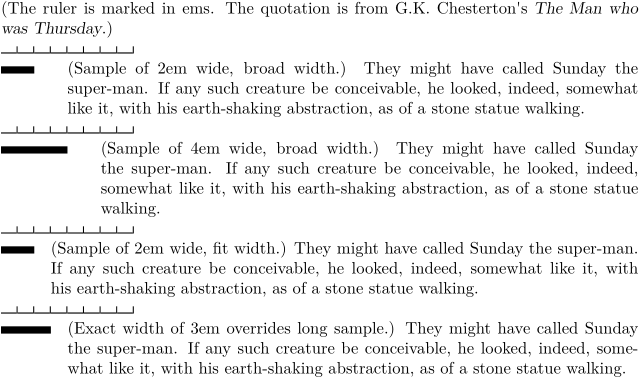

Syntax (autogenerated)
Syntax
| \setuptab[...,...=...,...] | |
| headstyle | normal bold slanted boldslanted type cap small... command |
| style | normal bold slanted boldslanted type cap small... command |
| sample | text |
| width | dimension default: broad |
| sample | dimension default: \hskip4em |
| MkII: location MkIV: alternative |
left |
| ...=... | see \setupdescriptions |
Description
\tab (a description created with \definedescription[tab]) starts an indented paragraph with a word or two (the 'key') in front of it. \setuptab configures styles and dimensions for \tab. By default, it leaves 4em for the key and 2em of space between the key area and the paragraph, the latter thanks to width=broad. width=fit leaves no space in between. In mkiv, width=fit leaves 1em of space between the key space and the paragraph; this is probably a bug.
Example
-
\def\ruler{% \dorecurse{8}{% \dontleavehmode% \blackrule[width={\dimexpr1em-0.5pt}, height=0.5pt]% \dontleavehmode% \blackrule[width=0.5pt, height=1ex]% } } \def\testpara{% They might have called Sunday the super-man. If any such creature be conceivable, he looked, indeed, somewhat like it, with his earth-shaking abstraction, as of a stone statue walking. } (The ruler is marked in ems. The quotation is from G.K. Chesterton's {\em The Man who was Thursday}.) \ruler \par \setuptab[width=broad, sample={\blackrule[width=2em]}, headstyle=slanted] \tab{\blackrule[width=2em]} (Sample of 2em wide, broad width.) \testpara \par \ruler \par \setuptab[width=broad, sample={\blackrule[width=4em]}, headstyle=slanted] \tab{\blackrule[width=4em]} (Sample of 4em wide, broad width.) \testpara \par \ruler \par \setuptab[width=fit, sample={\blackrule[width=2em]}, headstyle=slanted] \tab{\blackrule[width=2em]} (Sample of 2em wide, fit width.) \testpara \par \ruler \par \setuptab[width=3em, sample={thisisaverylongsample}, headstyle=slanted] \tab{\blackrule[width=3em]} (Exact width of 3em overrides long sample.) \testpara \par
- 
See also
Help from ConTeXt-Mailinglist/Forum
All issues with: